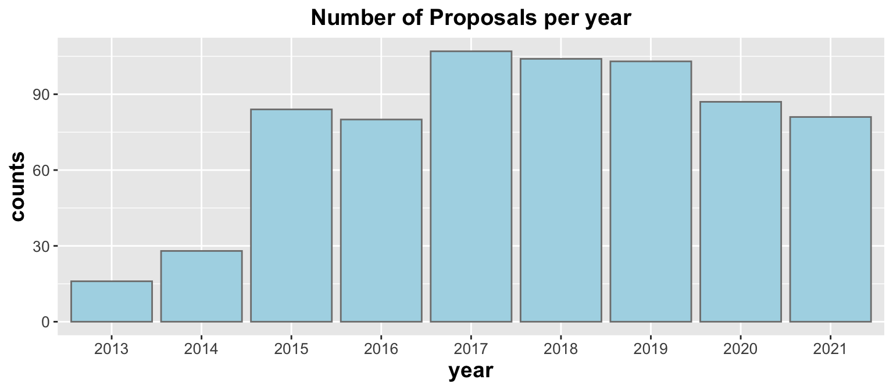
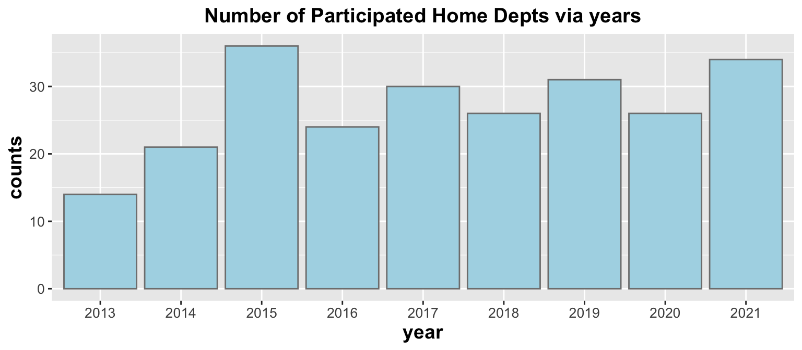
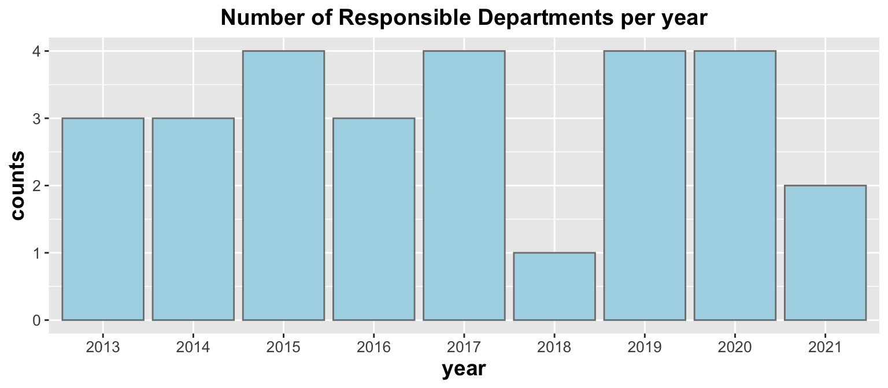

Chapter 2 General Trend
Personnel Home Department and Primary Responsible Department
In order to have a general look at the personnel home departments and primary responsible departments, I used an interactive nodes network to show all related departments and there connections. In the plot, the blue nodes show the primary responsible departments and the pink nodes show the personnel home departments. When the pink node is connected with the blue node, it means the pink node department had participated in one or more proposals that has been in charged of by the blue node department.
Note: Only the first several letters of the department name is shown on the node, if you move your mouse on the nodes, you will see the full names.
As we can see from the plot, DSI has participated in many proposals that are related to various departments at Columbia University. However, this interactive network only shows all the departments that appeared after 2013. To see the variations of number of proposals, personnel home department and primary responsible departments over years, I selected bar charts to illustrate the variations.
   As can be seen from the bar charts above, the number of proposals improved rapidly before 2017 and came to a peak in year 2017. After 2017, the number of proposals remained at a high level. Similarly to the number of proposals, the number of participating home departments is also in an increasing trend. However, the increase is relatively slow. Different from proposals and home departments, the number of primary responsible departments doesn’t have an obvious upward trend via years. Instead, the number reaches the bottom in 2018.